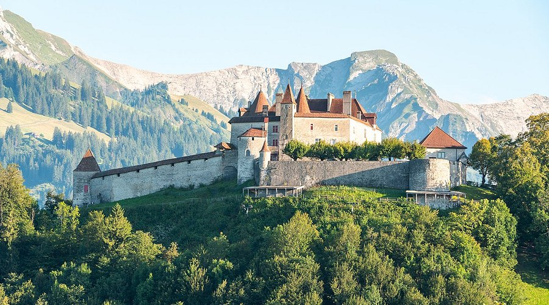

Situado sobre una colina que domina los Prealpes, este castillo fue erigido entre 1270 y 1282. Sigue el modelo de "cuadrado saboyano", construido con piedra de cantera local y cal. Fue levantado en apenas 12 años, un tiempo récord que demuestra la urgencia de los Condes de Gruyères por consolidar su soberanía en la región. Se hizo para funcionar como centro de justicia, administración y recaudación de impuestos. Representa la resistencia cultural de una de las familias más importantes de la Suiza occidental y la riqueza histórica vinculada a la tierra y la agricultura alpina.